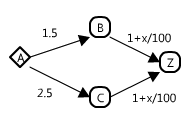

John Forbes Nash Jr. had organized his friends to attend a computer science related conference at some interesting location, but now they must all return back to their home (presumably at a less interesting location). Everybody is driving on their own, and there are enough people in the group such that having everybody take the same route would cause congestion and slow everyone down. Luckily there are multiple routes so that the traffic could be split between the network of roads, ensuring that everybody gets back home equally fast.
In every test set, the start city is A and end city is Z. There will be at least 2 people involved.
The input file DATA5.txt will contain 5 sets of input. The first line will contain an integer, 2 <= p <= 1000 denoting the number of people on a trip. The second line will say how many lines of input are to follow, 1 <= n <= 10. The next n lines describe the roads available.
Each road's description is in the format AB expression. The flow is directional from node A to node B (can't backtrack or drive in reverse), and the expression describes the amount of time it will take to complete this segment. Some roads, which are prone to congestion of traffic, might have a variable x in their expression, which stands for the number of people who choose to take this particular route.
For example: AB 1+x/100 -- this route will take 1.01 amount of time if one person takes it, and 2.0 if 100 people do. There will be no roads that will take negative time to move across. Supported operations are +, -, *, /. There will be no brackets in expressions. Remember that multiplication and division come before addition and subtraction (order of operations).
The output file OUT5.txt will contain 5 lines of output -- the optimal time it would take to get everyone from A to Z. Round your answers to the nearest integer.
100 2 AB 2 BZ 1+x/50 200 4 AB 1.5 AC 2.5 BZ 1+x/100 CZ 1+x/100
5 4
Explanation of the sample inputs: In the first case, there is only one path to be taken A->B->Z, so the time is 2 + (1+100/50) = 5. In the second case, there are two choices: A->B->Z and A->C->Z. The optimal strategy is to split the group 150:50 to get 1.5 + (1 + 150/100) = 4 or 2.5 + (1 + 50/100) = 4 drive time. To help you better visualize the second sample case, here's a diagram of it:
Remember to round your output to integer values.
Hint: Everybody gets to Z at the same time.